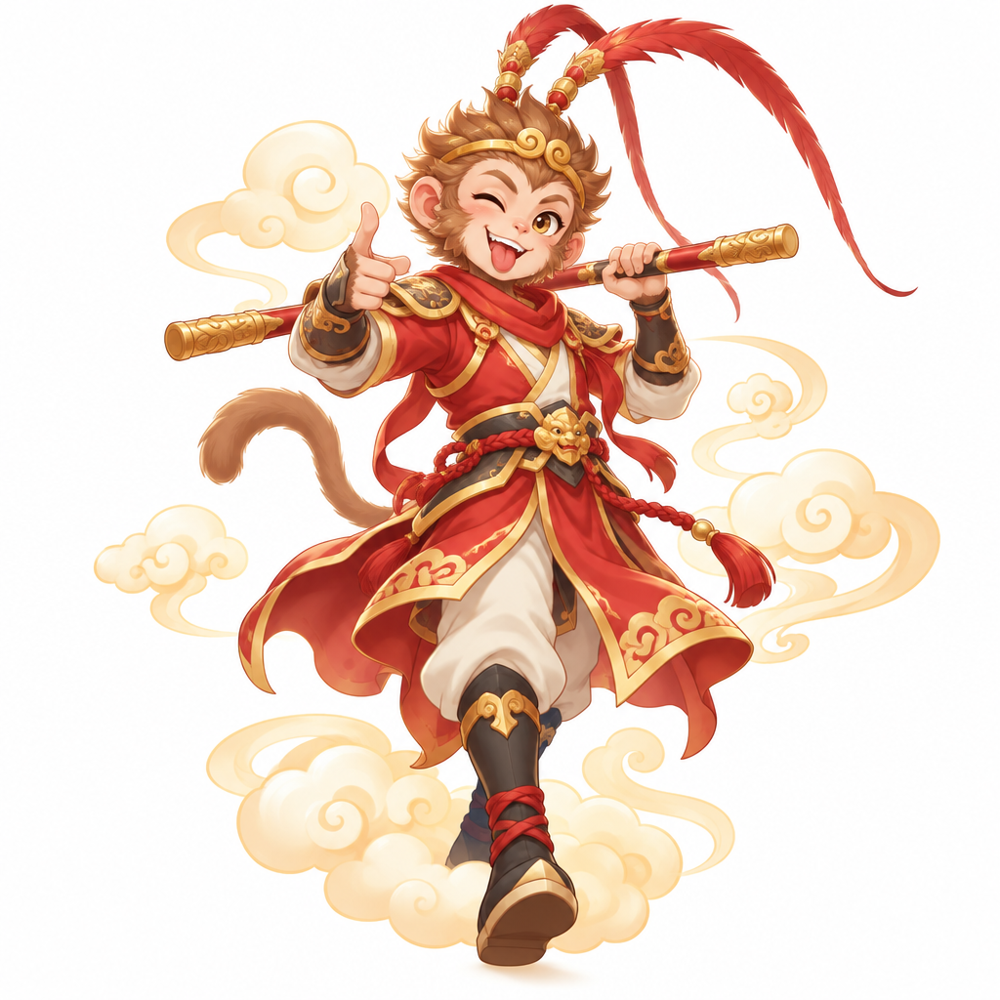

손오공 원숭이
- 이런 이야기예요
- 돌에서 태어난 원숭이 손오공은 72가지 변신술과 구름을 타고 날아다니는 근두운을 익혔어요. 하늘나라의 복숭아를 몰래 따 먹고, 자신을 잡으러 온 하늘 군사들을 골탕 먹이며 하늘나라를 발칵 뒤집어 놓았지요.
- 이렇게 뒤집었어요
- 하늘나라의 규칙을 무시하고 재주로 신들을 이겼어요. 하지만 부처님과의 내기에서 세상 끝까지 날아가 기둥에 이름을 썼는데, 그 기둥은 부처님의 손가락이었어요. 결국 자기 꾀에 넘어가 산 아래에 갇히고 말았지요.
- 생각해 볼까요?
- 손오공의 재주는 언제 가장 멋지게 쓰였을까요?
- 함께 읽을 책
- 오승은 『서유기』 (어린이를 위한 책이 여러 권 나와 있어요)